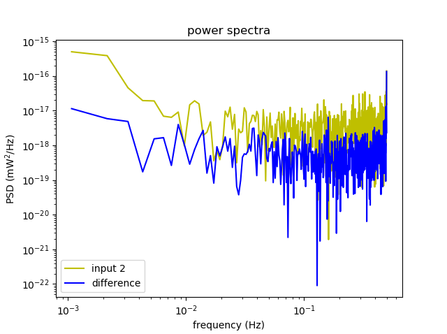
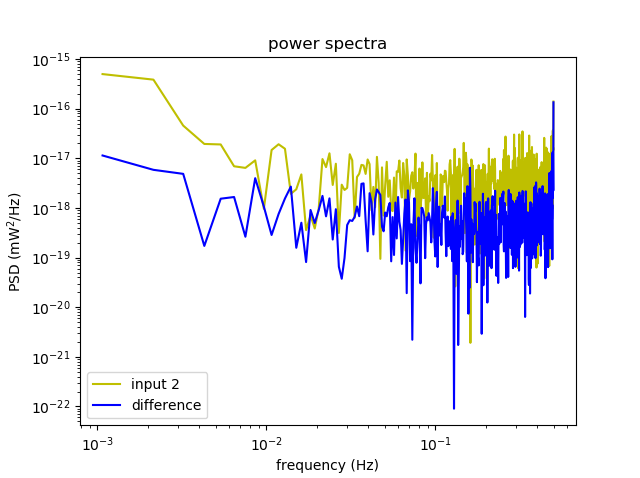
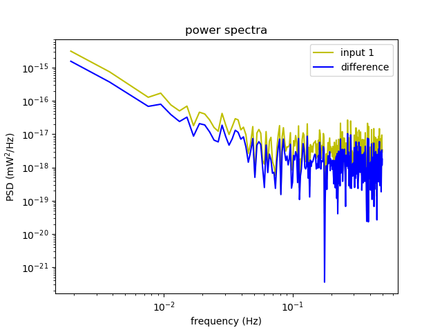

4. Receiver with Phase switch and two hybrids
Two tests were attempted for the given configuration. The following configuration involved the second stripline hybrid.
Test 1

Fig 6a. Time series for the two signals, signal 1 (blue) and signal 2 (orange)
 
Fig 6b. (i) Power spectrum for signal 1 (green) with difference (blue). (ii) Power spectrum for signal 2 (green) with difference (blue)

Fig 6b. (i) Power spectrum for signal 1 (green) with difference (blue). (ii) Power spectrum for signal 2 (green) with difference (blue)
Test 2

Fig 7a. Time series for the two signals, signal 1 (blue) and signal 2 (orange)
  Fig 7b. (i) Power spectrum for signal 1 (green) with difference (blue). (ii) Power spectrum for signal 2 (green) with difference (blue)
Fig 7b. (i) Power spectrum for signal 1 (green) with difference (blue). (ii) Power spectrum for signal 2 (green) with difference (blue)